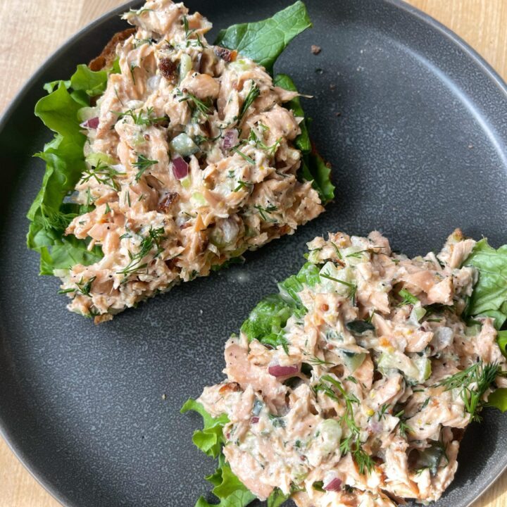

This is a salmon salad recipe

Prep Time: 5 mins, Total Time: 5 mins, Servings: 4
Ingredients
- 2 (7 ounce) cans salmon, drained
- 2 tablespoons fat-free mayonnaise
- 2 tablespoons plain low-fat yogurt
- 1 cup chopped celery
- 2 tablespoons capers
- ⅛ teaspoon ground black pepper
- 8 leaves lettuce
Steps
- Crumble salmon into a 1-quart bowl, removing any bones or skin.
- Mix together mayonnaise, yogurt, celery, capers, and ground black pepper in a small bowl. Add mayonnaise mixture to salmon and stir until well combined.
- Serve salmon mixture on a bed of lettuce leaves.